依照學習順序排列：先懂九宮與四盤，再認三奇六儀、八門九星八神，接著格局與定局，最後練專題。每一分類皆可用下拉選單篩選。
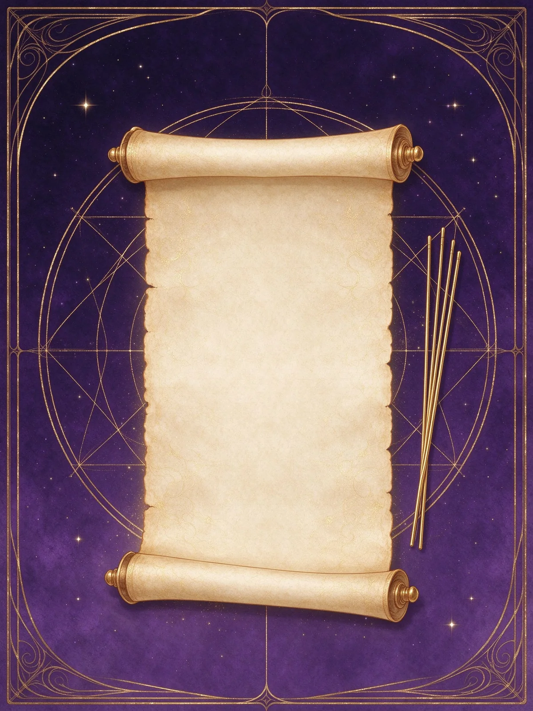
奇門遁甲是什麼、三式怎麼分、有哪些流派，以及這套系統能回答與不能回答的問題。
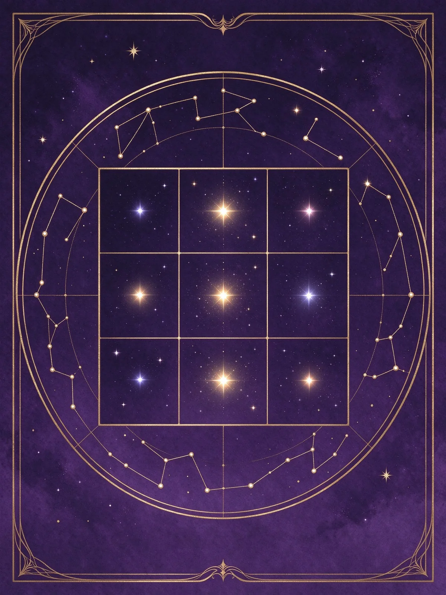
洛書九宮、四盤結構、旬首與值符值使，先把一張盤的每個位置認清楚。
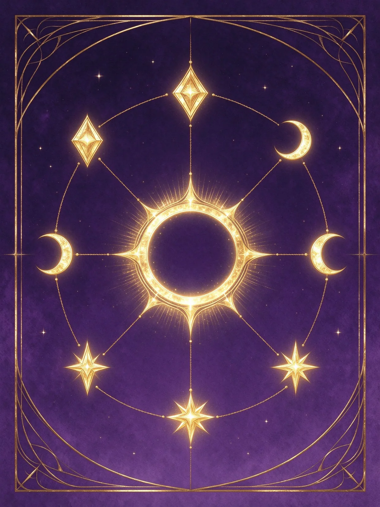
戊己庚辛壬癸與乙丙丁，陽遁順布、陰遁逆布，以及中五寄坤的規則。
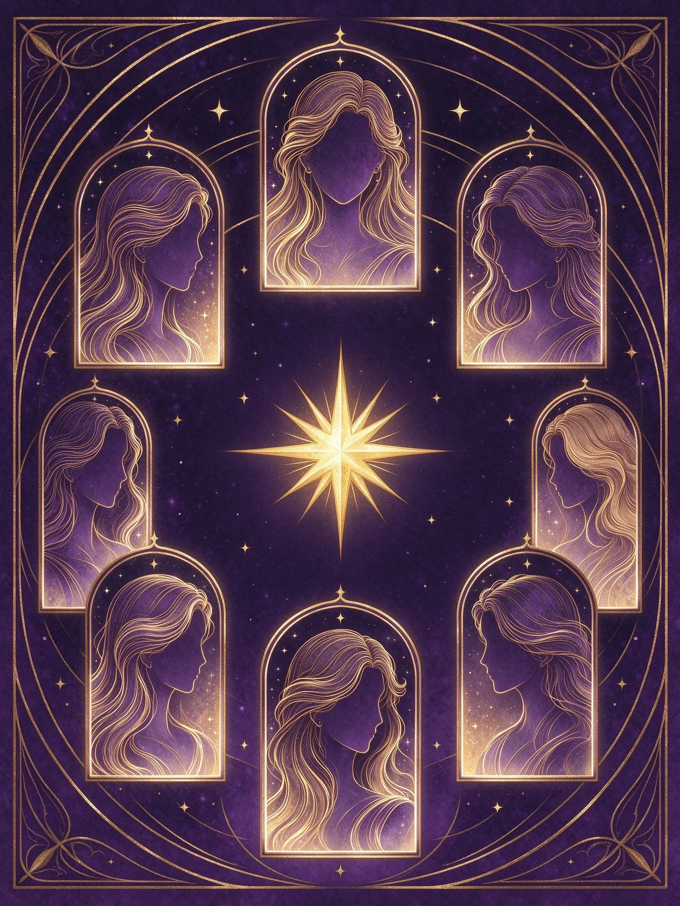
開休生傷杜景死驚，哪三門為吉、門迫與門制怎麼看、什麼事先看哪一門。
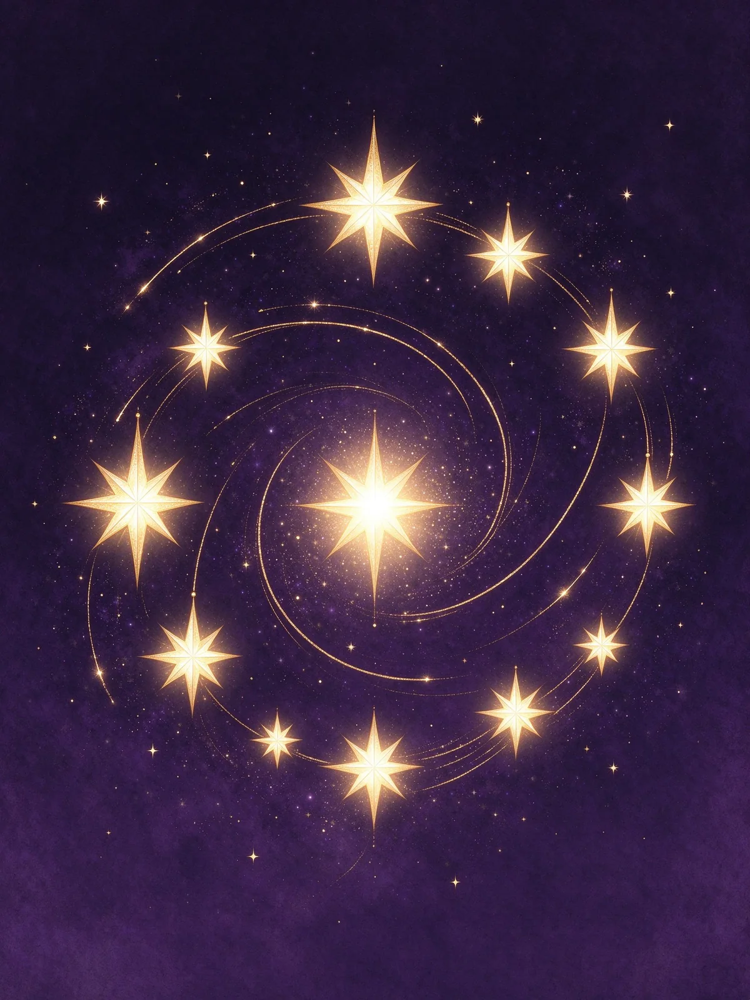
天蓬到天英，九星的五行、旺相休囚，以及星與門組合起來的意義。
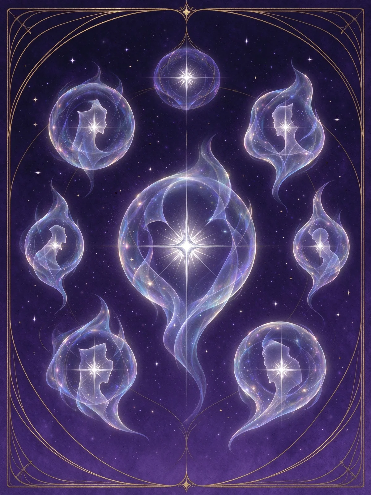
值符、騰蛇、太陰、六合、白虎、玄武、九地、九天，八神的性質與應用。
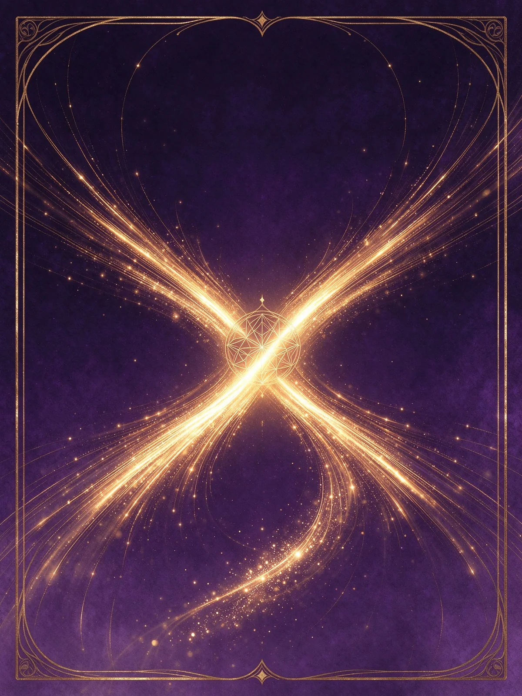
十干克應、三奇得使、伏吟反吟與空亡，把盤面訊號讀成一句判斷。
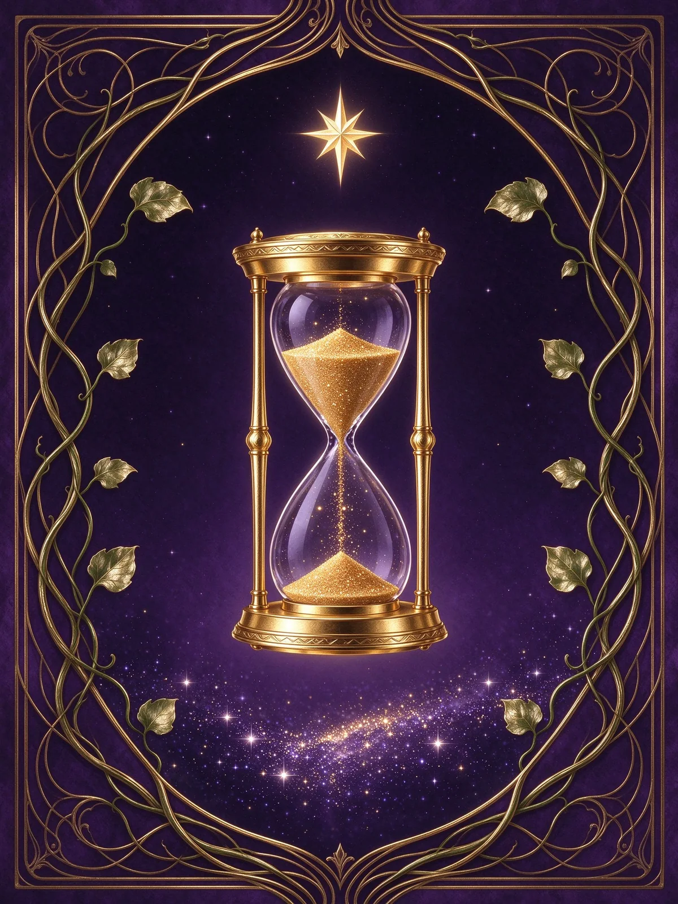
陰陽遁、二十四節氣三元定局、拆補與置閏，一張盤是怎麼被定出來的。
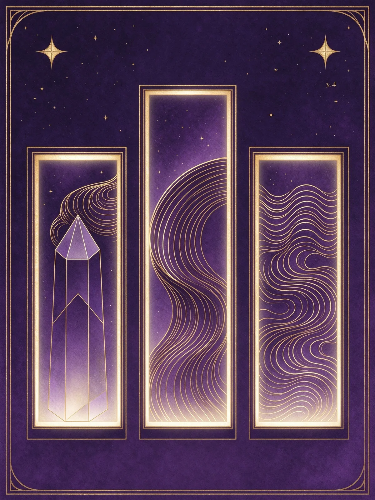
事業、財運、感情、健康、出行與談判，同一個盤面如何回答不同問題。
核心九類之外，這五區處理「用神怎麼取、盤怎麼排、案例怎麼斷、表怎麼查、疑問怎麼解」。
下圖為示意：每個宮位同時放八神、九星、八門、天盤干與地盤干。實際內容由日期與時辰決定。
先看日期落在哪個節氣、第幾元，查表得陽遁或陰遁第幾局。
地盤依局數順布或逆布六儀三奇；天盤值符星加時干宮，其餘八星隨轉。
值使門飛宮定八門，值符神領八神，再看門迫、空亡、伏吟反吟。
八門是奇門最實用的一層：問事業看開門、問財看生門、問感情看休門與六合。點進去可以看每一門的性質與宜忌。
奇門的門檻在「盤面語言」。照這個路線走，三個月可以自己排出並讀完一張盤。
九宮、四盤、八門九星八神的位置與縮寫，先做到看到盤就能念出來。
二十四節氣、上中下三元、陰陽遁與局數，學會查表定出一張盤的底盤。
值符加時干、值使飛宮、八神順逆，手動排出完整盤面。
門、星、神、干的性質與組合，開始把符號翻譯成一句話。
依問題定用神，找出關鍵宮位，再判斷生剋與旺衰。
用實際事件回推，累積「這張盤後來說對了什麼」的經驗。
不想從頭學，也可以依照你現在想問的問題，直接看那一條線。
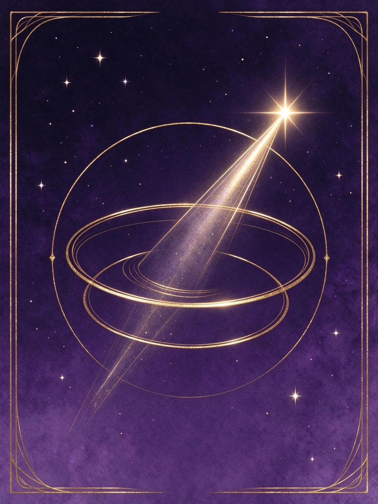
開門看事業與公開場合，生門看財利，戊為資本。再看值符與宮位旺衰定進退。
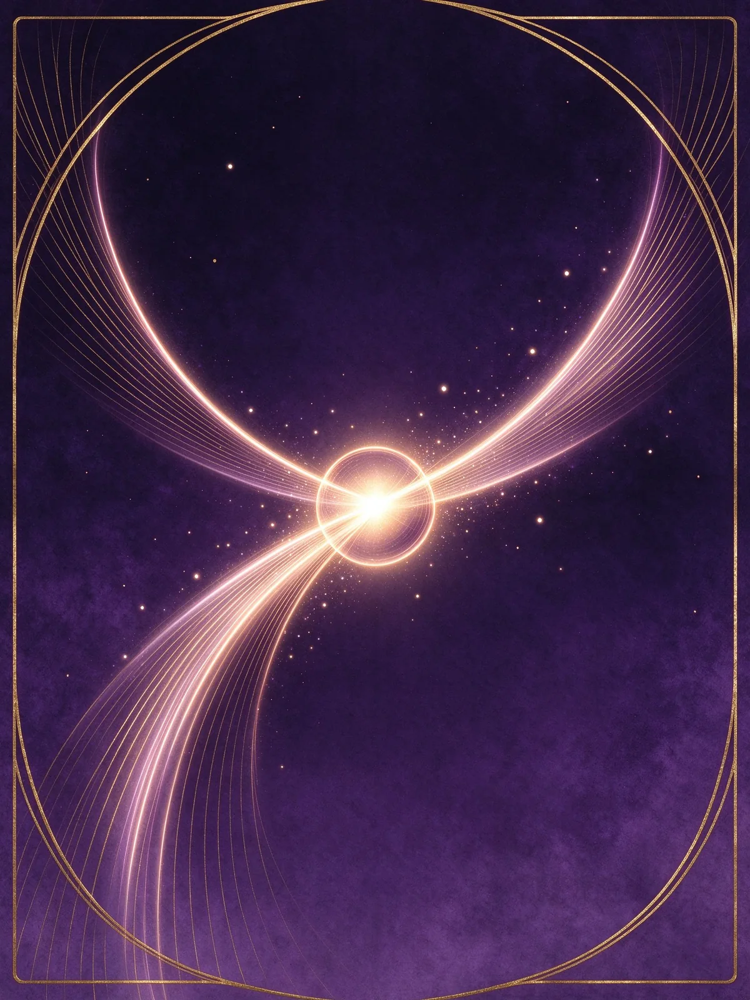
乙為女方、庚為男方，六合主婚姻媒介；以兩宮生剋與空亡判斷關係節奏。
天芮主疾病、天心主醫藥；出行看目的地宮位與馬星，避開空亡與門迫。
同一個人生議題，不同系統會從不同角度觀照。